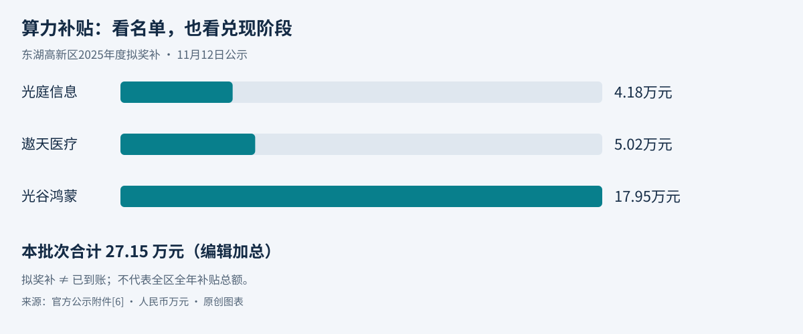

本期范围与证据口径
北京时间2026年11月13日。实际检索截止：08:56:21（UTC 00:56:21）。优先窗口为11月12日08:56:21至11月13日08:56:21，扩展窗口为11月10日08:56:21至11月13日08:56:21。本期精选5条，4条中国大陆、1条全球动态。来源没有发布时间或时区时，按72小时扩展保守标注，不把转载日期当事件日期。
已回看最近7天站内高管简报及今日独立AI日报。本文选题不重复既有事件；今日AWS AgentCore、Claude自托管与会议、Gemini Hydrogen、Inkling条目保持原样。摘要为来源事实或厂商表述，重要性、影响及建议为编辑分析。
只使用公开资料和原创图解，不转载第三方照片。正式政策、实施解读、拟补贴公示和产品试用分别标注，不将目标数量、拟补贴或发布新闻当作采购收入。
从政策到经营，先看三个环节
原创分析框架，依据本期公开材料整理，非成交预测。
- 方案与实施
谁负责、何时执行
目标不是订单，规则变化应落实到系统差异。
- 拟补贴
到了哪一个阶段
申报、公示、拨付、到账分别记录。
- Agent产品
能否被验证与控制
试用、分批开放、生产实测不可混为一谈。
01｜福建：AI行动方案公开，政务公共平台与算力服务采购列入部署
事件时间：11月7日印发；首次公开及本次新增信息：11月12日08:44。时效：72小时扩展，较24小时窗口早12分21秒；不是11月12日才生效。
摘要： 福建公开《推动“人工智能+”行动方案（2026—2028年）》，提出建设省数字政府AI公共服务平台，打造智能问答、辅助审批等10个以上场景，推广算力租赁和服务采购，建设100个以上行业高质量数据集。文件自印发之日起实施、有效至2028年底；这些是政策目标，尚不能视为已落实项目或采购规模。[1]
为什么重要： 文件将算力、数据、模型和具体应用同时部署，为识别跨部门需求提供了明确方向。
业务影响： 公共平台、数据治理和行业应用可能形成不同采购与运营边界。目标场景数不能直接换算成独立项目数，更不能乘以假设客单价估算收入。
建议： 按责任部门梳理后续任务清单、预算及公开采购，优先检查数据权限、统一平台复用和业务验收，避免先搭平台再找需求。
证据与限制： 已经公开HTTP读取省政府通知及方案完整正文；搜索阅读器未成功打开。未发现与本文目标一一对应的采购预算，未假设补贴标准或项目已启动。[1]
02｜全国财政：新指南实施解读要求更新报告模块，先做规则与数据适配
本次新增：财政部11月12日发布实施答问，页面未列时分，保守按72小时扩展。关联通知10月11日成文、11月4日发布，规定2027年1月1日起实施；本条不是把旧通知当新法规。
摘要： 财政部新发布的政府财务报告指南实施解读，要求按新规则更新预算管理一体化系统的财务报告模块，优化审核、汇总和分析，推动数据贯通。修订涉及专项债相关抵销、长期股权投资及资产分类等。两个指南明年起实施；本次新增的是落实要求的公开解读，并非新增AI采购或独立预算公告。[2][3][4]
为什么重要： 这是有制度时间表的系统适配需求，判断价值应从报表口径和数据链路出发，而不是先贴“大模型”标签。
业务影响： 潜在工作包含规则校验、数据映射、跨系统对账和回归测试。财务报告的真实性、准确性等责任仍由相关部门和单位承担，不能转交给生成式模型。
建议： 先形成新旧报表与规则差异清单，核查现有供应商升级范围及预算安排。若引入AI，限于可追溯的辅助解释和异常定位，确定性计算仍由规则与测试保障。
证据与限制： 已读财政部答问和两份实施通知正文；本期未逐页审阅指南PDF附件，不给出会计处理操作意见，也不宣称已获得各地改造订单。[2][3][4]
03｜广东：珠海签约AI时政资讯服务，合同期限表述需先澄清
合同签订及首次公告：11月12日；官方页面发布15:24:36（北京时间）。时效：过去24小时。
摘要： 珠海市委宣传部公告与新华网签订重点媒体智库服务协议，采购AI时政资讯智能体“新华语典”，合同金额9.8万元，采购方式为单一来源。服务面向理论学习、政策研究、新闻报道等。公告“服务要求”写订阅一年，但“履约期限”写签订日至2026年12月31日，两处不一致，不能据此确定实际服务期限或年化价格。[8]
为什么重要： 这是已经公布合同的专业内容AI服务实例，付费对象不仅是通用模型或算力，还包括特定知识内容与工作支持。
业务影响： 内容型智能体可作为政务AI的一种采购形态，但单个小额合同不足以证明市场普遍转向订阅，也不是面向其他供应商的新招标窗口。
建议： 研究同类产品时，分清内容授权、模型能力和服务支持的边界，先核实期限、账号数量及验收约定，再比较价格或测算复制空间。
证据与限制： 已读取珠海政府网合同公告正文，未取得完整签署合同或验收证明；上述期限矛盾保留，不自行修正。签约不等于已上线使用或已取得效果。[8]
04｜湖北：东湖高新区公示27.15万元拟算力补贴，兑现阶段要与政策上限分开
事件及首次公告：11月12日17:00，公示期11月12日至18日。时效：过去24小时。对应2025年度事项，不是新一轮申报启动。
摘要： 东湖高新区公示2025年度人工智能算力补贴拟奖补名单，经过企业申报、形式审查和专家评审。附件列出光庭信息4.18万元、遨天医疗5.02万元、光谷鸿蒙17.95万元，合计27.15万元（编辑加总）。这仍是拟奖补公示，不证明最终拨款已完成，也不能据三家名单推断全区全年支持总额。[5][6]
为什么重要： 相比政策最高支持额度，拟奖补名单更接近实际执行环节，但公示、认定、拨付和企业到账仍需分开。
业务影响： 算力服务商不能把客户可能获得的补贴当作已经支付的现金，企业也不应以理论上限直接抵减本期全部算力成本。
建议： 对已有补贴相关项目分别登记合规用量、申报证据、拟获金额和实际到账时间，以真实服务合同及付款条件管理现金流。
证据与限制： 已直接读取政务网公告和DOCX附件，金额单位为人民币万元；27.15万元为三项算术和，不是公告另列财政总预算。未查到本批次后续拨付证明。[5][6]

05｜全球企业AI：Cognigy更新平台，保留确定流程与Agent混合运行
产品宣布及首次发布日期：11月12日，厂商页面未列时区与时分；保守按72小时扩展。11月12日起可在Trial环境探索，现有环境从11月开始逐步推送，并非全量即时开放。
摘要： NiCE Cognigy发布新一代平台，新增以Agent为中心的工作界面、构建辅助、执行追踪和多变量模拟测试，同时保留现有Flows与Flow Agents。厂商称可先执行同意检查等确定步骤，再交给Agent，或由Agent调用现有流程。开放采用试用与分批推送，既有系统无须一次性全部重建是厂商承诺，尚未独立实测。[7]
为什么重要： 企业客服平台的一条演进路径是把灵活决策放进可控制的业务边界，而非宣称所有流程都会被Agent替代。
业务影响： 国内平台竞争需要同时考虑存量资产兼容、工具权限、追踪、测试和故障回退。交互更自然并不自动证明效果、成本或合规更优。
建议： 评估新平台时用同一业务用例比较流程、Agent及混合方案，记录误操作、人工介入和运行成本；涉及身份、同意或资金等关键步骤，应单独验证控制。
证据与限制： 已通过公开HTTP读取厂商完整发布正文，搜索阅读器受限；未实测迁移、性能或成本。关于保留既有能力及减少重建的内容均为厂商表述。[7]
地区覆盖与存量事项
北京新线索本轮未取得足够可读原始材料，不为地区配额凑数。此前已报道项目不因进入文件获取截止日再次充当新消息；本期未重新确认其澄清和延期，参与前应回到采购平台核查。
今日判断
政策与制度正在把AI和数字化需求具体化，但规划场景、系统适配和实际采购仍是不同层次。珠海合同提供了专业内容AI服务付费的单例，仍需核实期限和使用效果，不能外推全市场。湖北拟补贴名单提示，判断政策效果应看执行金额与到账，而非只看最高支持额度。财政报告适配首先需要确定规则和可信数据；Cognigy的混合设计也说明，Agent应与可检验流程一起评估，而非默认替代全部流程。